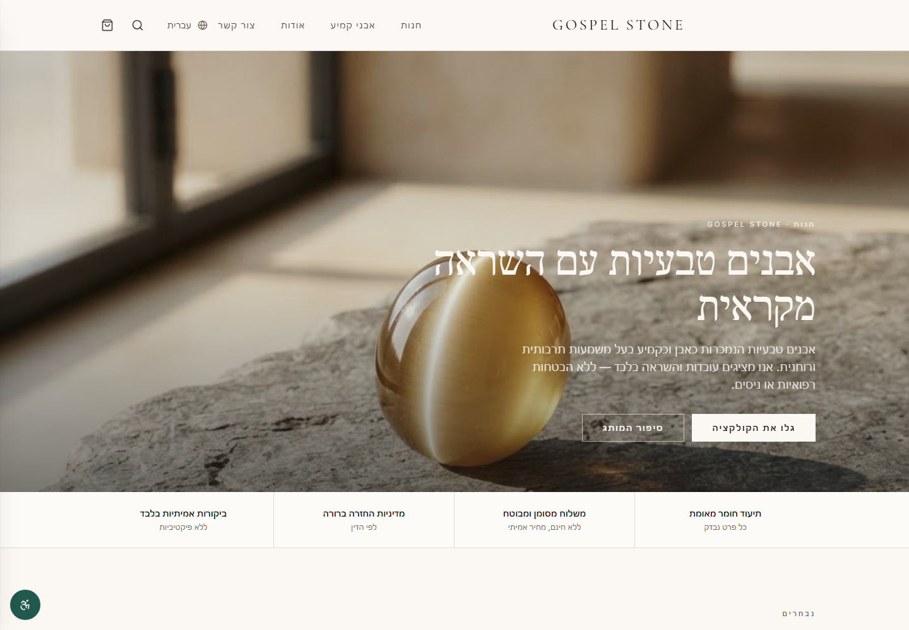
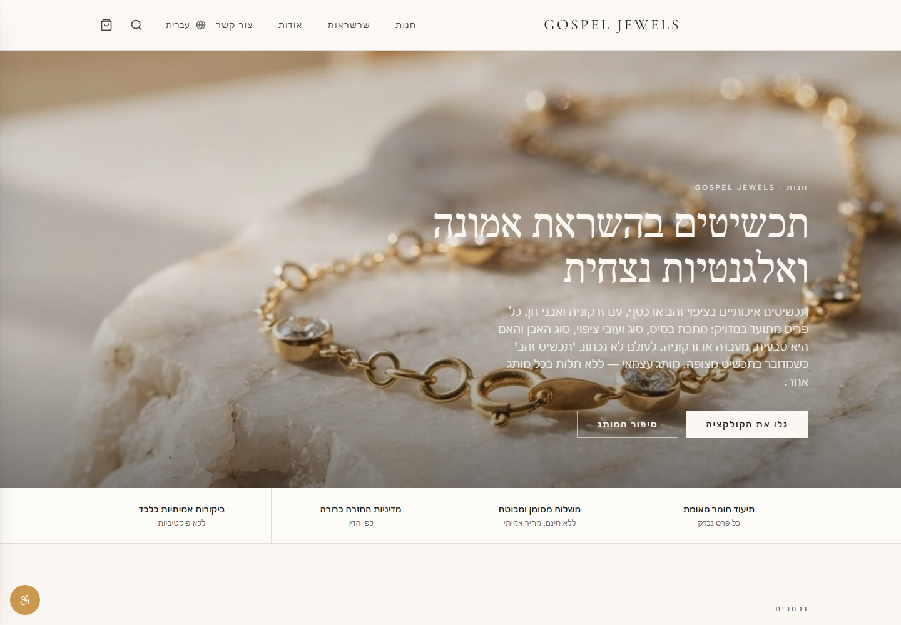
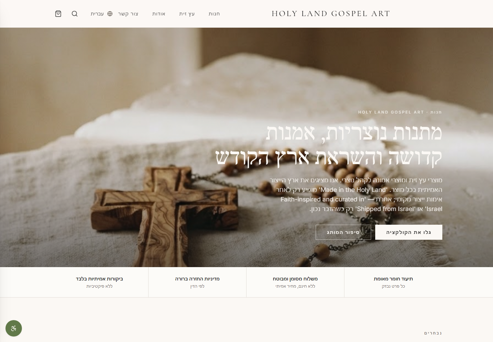
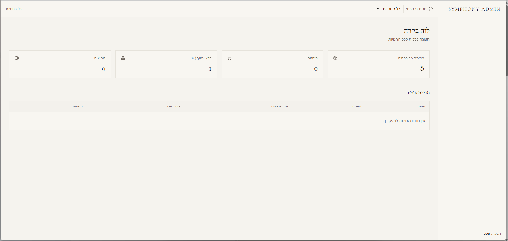
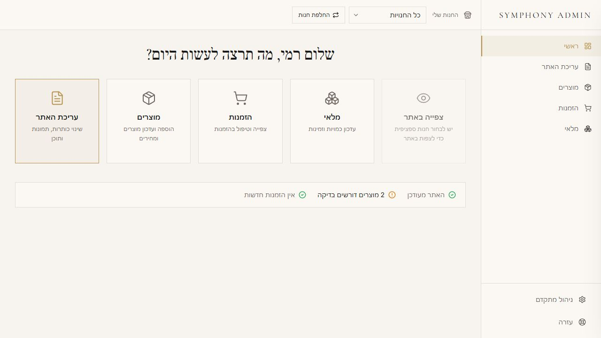
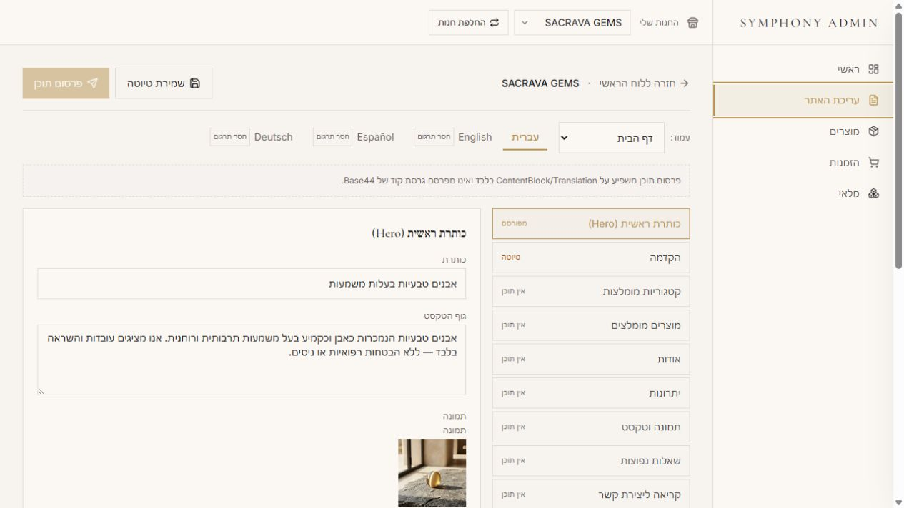
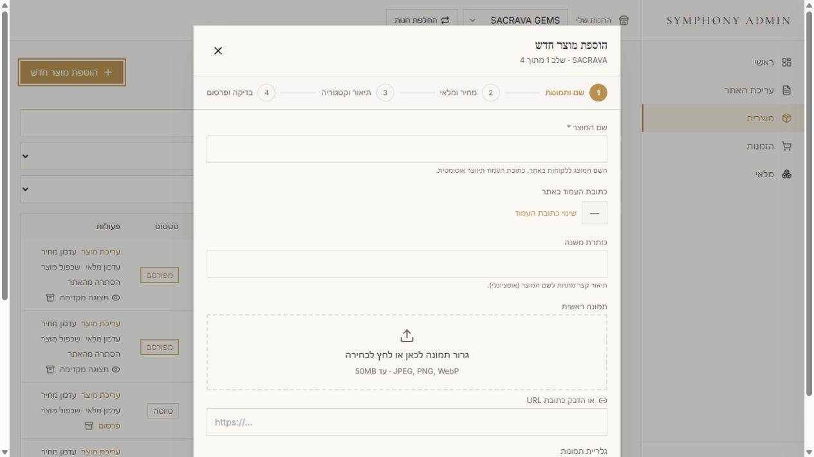
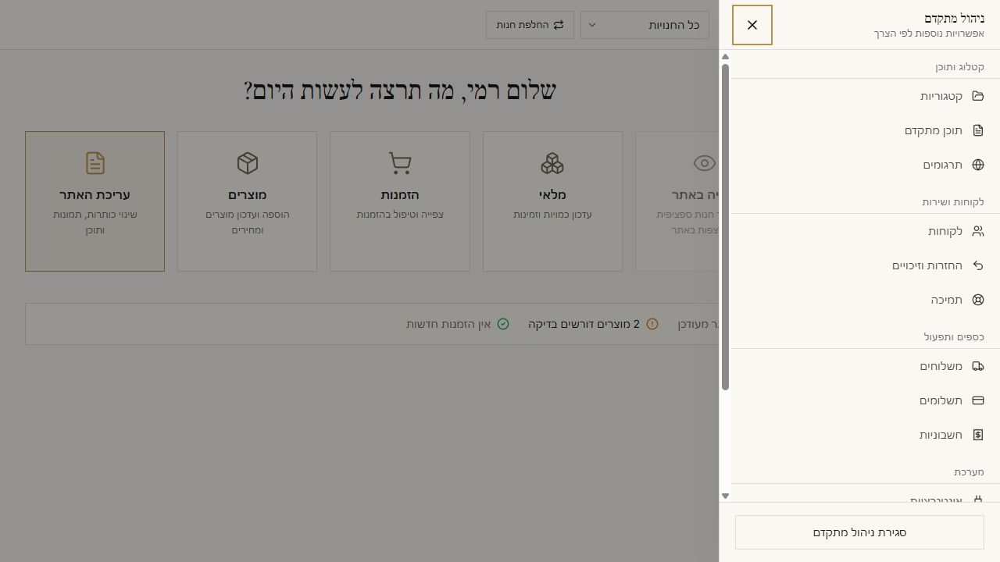
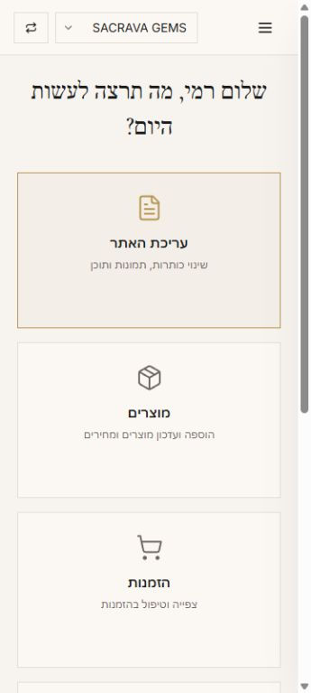

Customer side
Each store must feel complete on its own
Independent names, domains, visual direction, products and navigation — with no accidental bridge between brands.
Product design · UX/UI · Web applications
I design and build secure, accessible web experiences that feel simple for customers and the people who run them.

Gospel Stone
Gospel Jewels
Holy Land Gospel ArtLuxury Trio Collective
The challenge was not simply to build three stores. It was to make each brand feel independent while keeping daily management calm, consistent and safe.
The product problem
One legal business needed three distinct public identities, strict separation between their products and a single interface a non-technical owner could learn quickly.
Customer side
Independent names, domains, visual direction, products and navigation — with no accidental bridge between brands.
Owner side
A shared admin needed to replace technical database language with recognizable jobs: content, products, orders and inventory.
System side
Shared data and workflows still had to preserve store scope, authenticated access and server-validated commerce behavior.
The customer experiences
The system is shared. The typography, imagery, tone and product context are intentionally brand-specific.
Earth-led imagery, natural textures and restrained typography create a sense of material authenticity.
A lighter composition, luminous materials and fashion-led framing establish a contemporary jewelry identity.
Warm, tactile storytelling connects craft, faith and the landscape of the Holy Land without changing the underlying system.
Information architecture
A reusable multi-store foundation avoids three duplicated systems while keeping every customer-facing experience correctly scoped.
Products, orders and management views stay associated with the correct store.
Price and store assignment are validated beyond browser-supplied values.
The central admin is authentication-gated and public routes reveal no management data.
The experience remains demonstrable without suggesting that live charging is enabled.
How I worked
Mapped what must be shared, what must stay isolated and which actions the owner performs most often.
Defined hostname routing, store scope and a reusable storefront structure before polishing individual brands.
Reorganized technical capabilities around five primary jobs and moved infrequent tools behind progressive disclosure.
Created structured content editing, a product wizard and clear draft/preview/publish states.
Tested store isolation, protected routes, RTL/LTR behavior, mobile navigation and sandbox boundaries.
Admin transformation
The redesign did not remove professional capability. It changed when and how complexity appears.


Symphony Admin
The owner sees business concepts, not internal IDs. Daily actions stay prominent; advanced operations remain available without competing for attention.
Interface system
Consistent controls, visible status and constrained choices make complex work easier to complete correctly.




Responsive & accessible
A business owner may manage products from a phone. Responsive behavior, touch comfort and readable hierarchy were treated as operational requirements.
Selected decisions
Good interface work is not only how the product looks. It is what the product prevents, explains and makes recoverable.
Internal store keys, raw IDs and schema concepts stay out of the owner interface.
Editing follows a visible save draft → preview → publish content sequence.
Changing store context updates every view; invalid scope does not quietly select another brand.
Browser input does not determine trusted price, store assignment or paid order state.
Hebrew RTL and Latin-script LTR layouts switch document direction instead of only translating labels.
The interface communicates demo payment mode without implying production commerce readiness.
Outcome
Each storefront has its own domain, content voice and catalog context.
Common tasks are easy to find without losing access to advanced operations.
Shared components and scoped data avoid maintaining three parallel applications.
Authentication, store isolation and sandbox status remain part of the product experience.
About my work
I work at the intersection of product strategy, UX/UI and AI-assisted implementation.
My focus is turning complicated requirements into experiences people can understand quickly — while preserving the permissions, data boundaries and operational logic that make the product trustworthy.
Let’s build something clear
Explore the code, projects and ongoing work on GitHub.
View GitHub profile